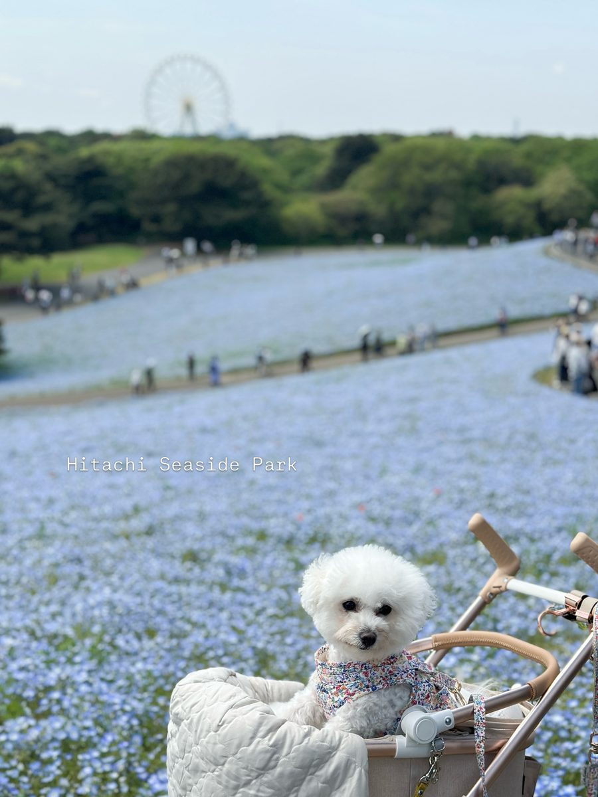
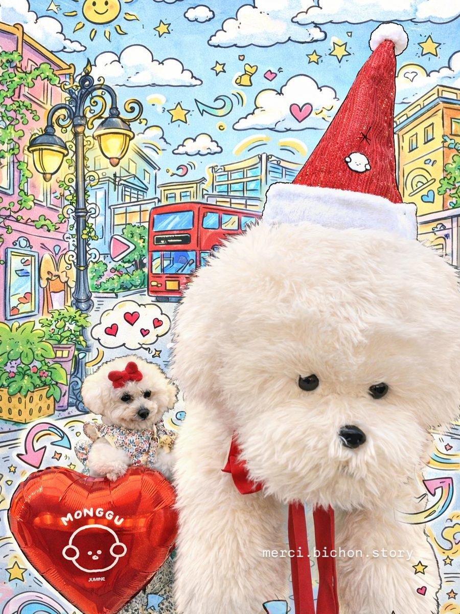
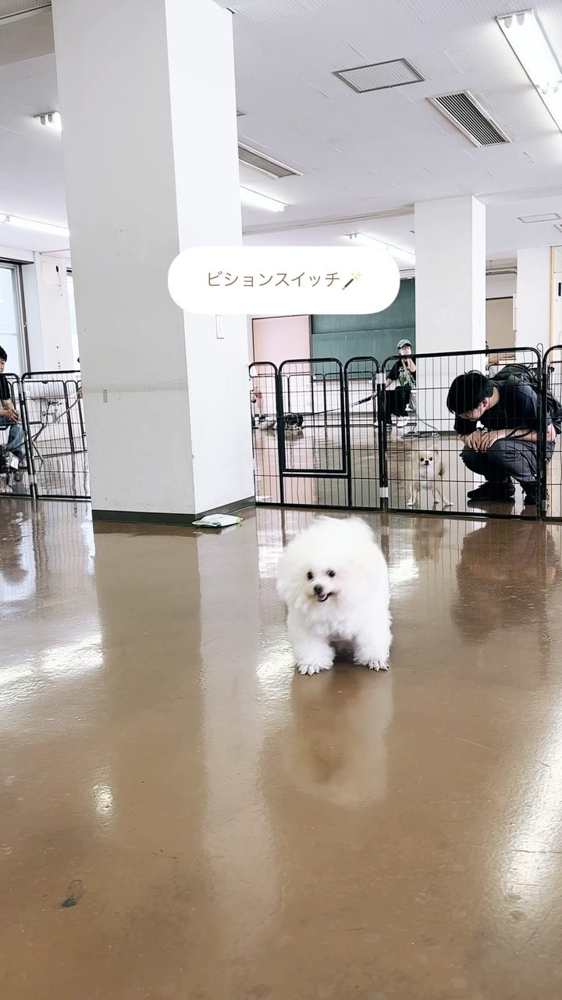
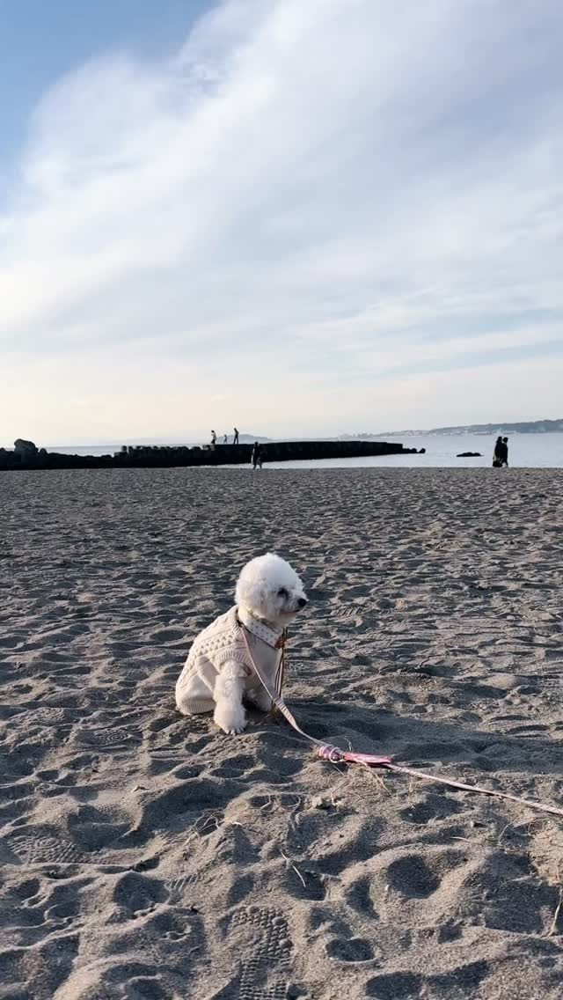
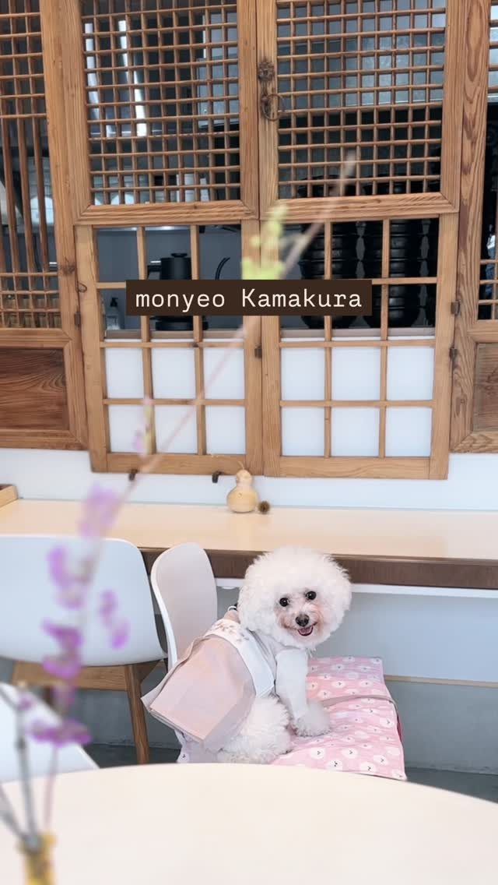
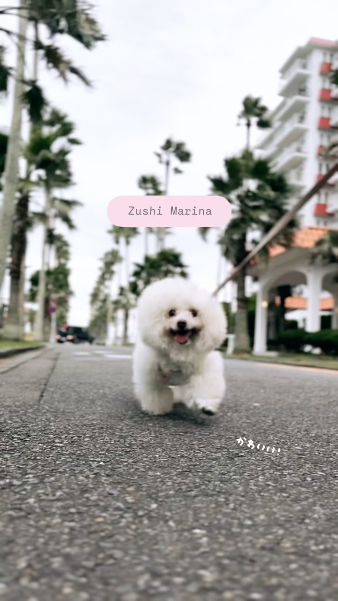
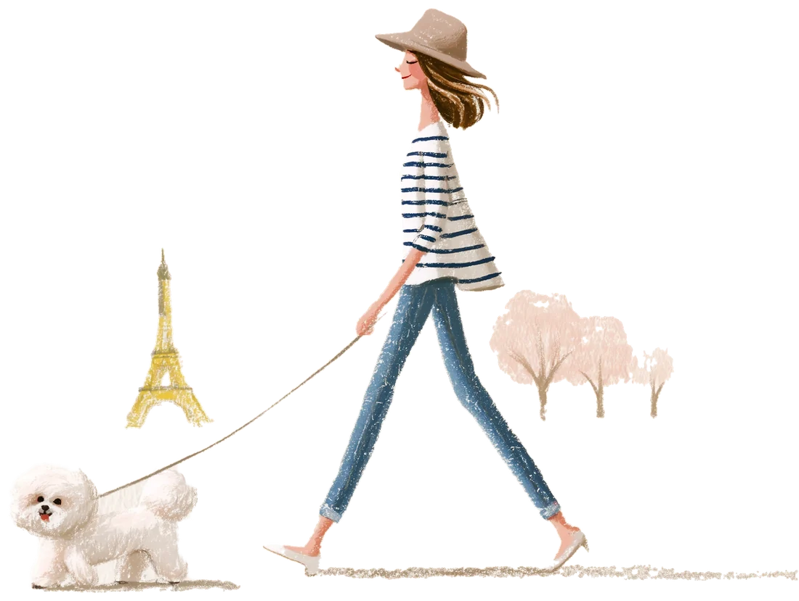

Merci's Story
少しずつ、一歩ずつ
- 01
2024.10
家族に迎えた日
- 02
FIRST WALKS
お散歩で
固まっていた頃 - 03
STEP BY STEP
少しずつ
歩けるように - 04
NOW
ドッグランを
走る今
About
こんにちは、
私は元保護犬。
おうちに迎えられたばかりの頃は、
このサイトでは、
メルシーのアルバム
 ハロウィンのフォトブースView →
ハロウィンのフォトブースView →
ネモフィラの丘・ひたち海浜公園View →
メリークリスマスView → カフェでランチView →
カフェでランチView →動くメルシー
→ 横にスクロール

ドッグランで元気にランWatch →
海を眺める夕暮れWatch → 鎌倉の紫陽花さんぽWatch →
鎌倉の紫陽花さんぽWatch →
モニョさんView place →
逗子マリーナView place → ニコライ バーグマン 箱根 ガーデンズView place →
ニコライ バーグマン 箱根 ガーデンズView place → ナスファームビレッジView place →
ナスファームビレッジView place →少しずつ、一歩ずつ
2024.10
家族に迎えた日
FIRST WALKS
お散歩で
STEP BY STEP
少しずつ
NOW
ドッグランを
メルシーに会いに来てね
お出かけやイベントの様子は
LINEスタンプや
